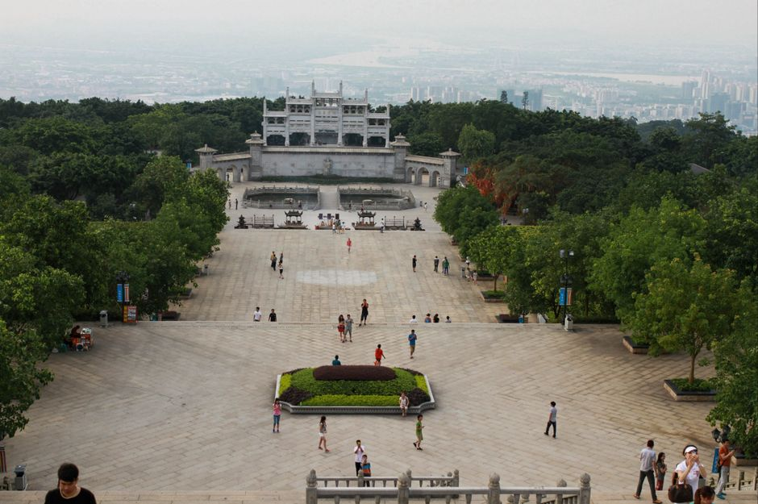
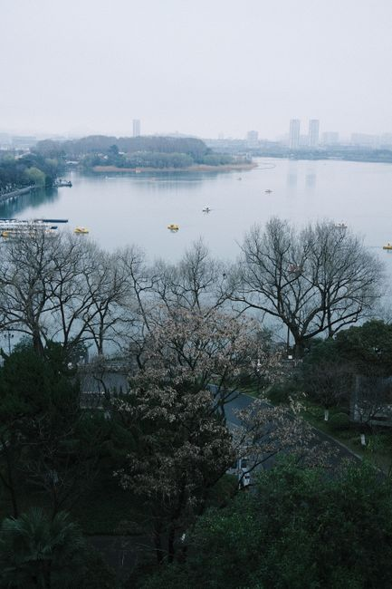
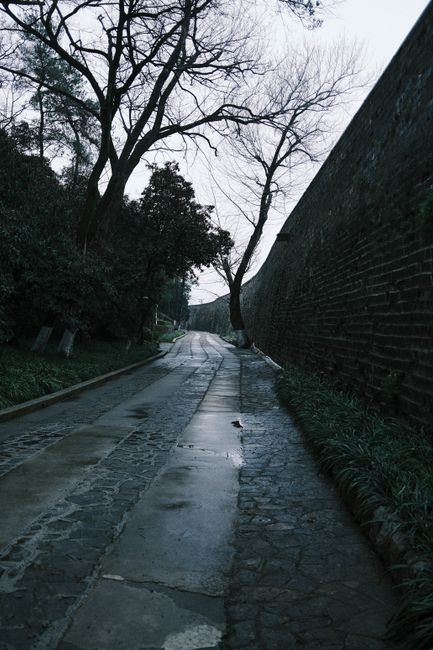
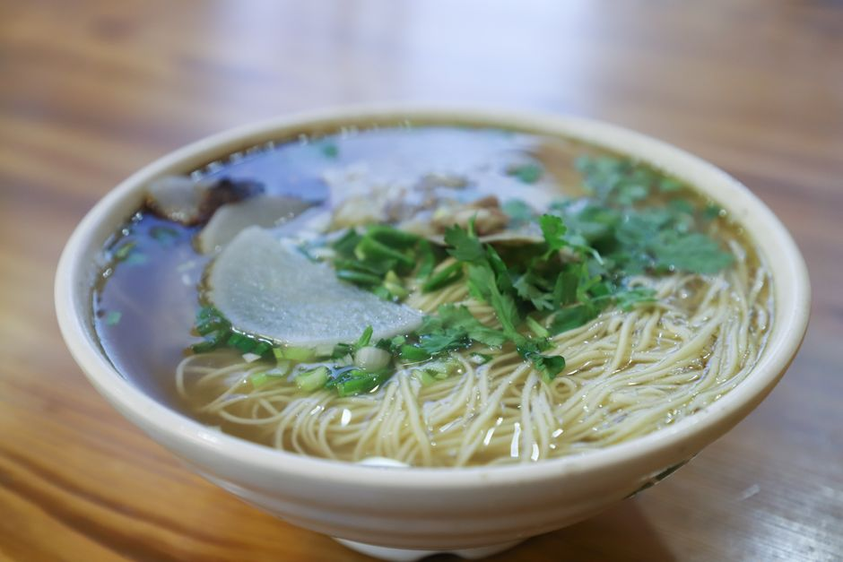
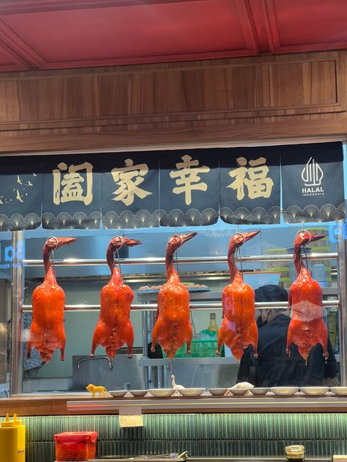
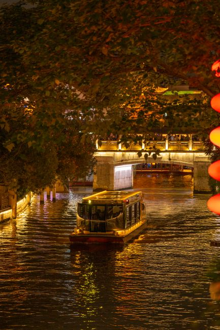
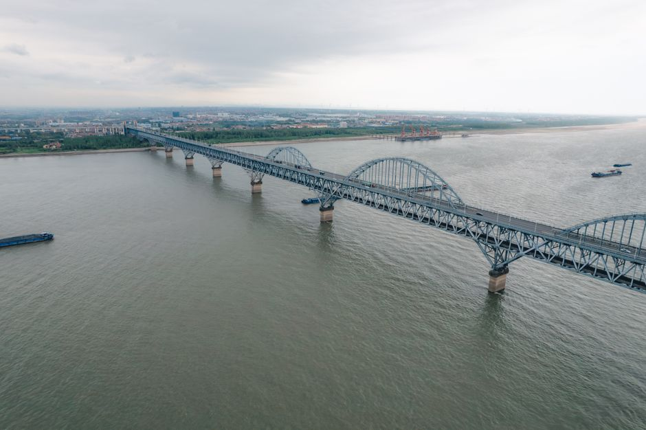

8 个条目均已挂图到 city_data.js，网站南京页实时生效 · 图片来自 Pexels（CC0 免费商用）

钟山龙蟠，主峰海拔 448.9 米，横亘城东。这里是宁镇山脉的西端，也是南京城的地理骨架——山与城在历史里反复对话。
图源：Mehmet Turgut Kirkgoz (Pexels) · Aerial view of the Sun Yat-sen Mausoleum in Nanjing with tourists exploring the

江南三大名湖之一，湖水来自钟山汇流。湖面开阔，北望幕府山，南倚明城墙，是城市与自然咬合最紧密的地方。
图源：Garrison Gao (Pexels) · Serene view of Xuanwu Lake in Nanjing, China during spring, featuring calm water

世界上最长的古城墙之一，依山水走势而建。秦淮河穿城而过，把六朝繁华与市井烟火串成一条线。
图源：Garrison Gao (Pexels) · A peaceful, wet cobblestone path alongside an ancient wall in Nanjing, China.

秦淮水系密布，自古养鸭成风——水乡湿地给了鸭群最好的育肥环境，也让“金陵鸭馔甲天下”成为地理的必然。
图源：Cats Coming (Pexels) · Warm noodle soup garnished with herbs and sliced radish in a ceramic bowl.

南京人“无鸭不成席”。湖鸭与桂花鸭的腌卤工艺，说到底是对江南温湿气候的适应：湿度大，卤味易渗透，风味更足。
图源：Ariel Sebasthian (Pexels) · Halal roasted ducks displayed in an Indonesian restaurant with Chinese character
江南稻作区的甜食底色。糯米与赤豆都来自圩田沃土，一碗温热甜糯，是水乡生活的温度计。
图源：Yi Li (Pexels) · Colorful Taiwanese glutinous rice balls in a playful cat-themed bowl on a white

为什么南京总带着一种“散淡”的气质？地理给了答案：城依山、山环水，气候温润宜人，物产丰饶。六朝以来，这里既是兵家必争的形胜之地，又是文人雅士醉心的温柔乡。山水的从容，长进了南京人的性格里。
图源：新宇 王 (Pexels) · Beautiful night view of a tour boat on Qinhuai River, Nanjing, with illuminated

南京的兴起，根子在长江。江水在此拐弯收窄，形成天然的津渡与屏障，从石头城到燕子矶，长江给了这座城市“扼守东南”的地位，也给了它“大江东去”的气度。
图源：jason hu (Pexels) · Aerial shot of a long bridge spanning over the Yangtze River with barges.